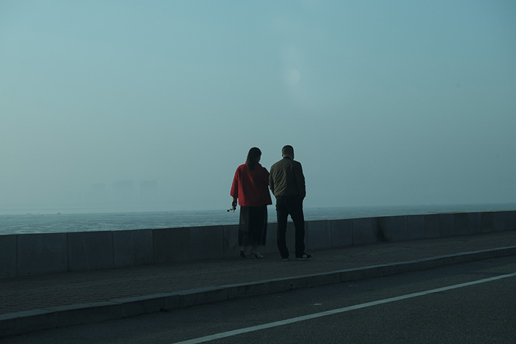
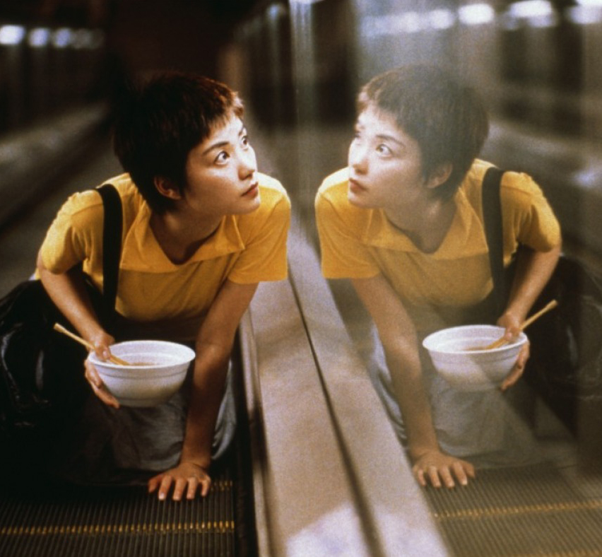

摄影|桂林大河
我们活在世上，必须要爱一些人，伤害一些人，再忘记一些人
苏更生
-ONE STORY-
文/周于旸
在年后的二十年，所有的意义，痛苦以及孤独都可以在逃荒经历中找到源头，命运是一张由无数抉择编制的网，早已为人生那一点可怜的面积量好了尺寸。
-连载-
文/天爱
尽管对任何新生的生命没有什么期待，他却希望已经存在的生命可以尽量免除痛苦。
-回答-
文/林庭答
一个刻板印象是，人一开心，就会觉得是在做自己，应该是反过来，只有在做自己的时候，人才会真正开心。
-音乐-
文/董大胆


仅靠浅薄的喜欢是不足以支撑我们走到最后的，而我注定要花费漫长的岁月，才会成为能够坦荡自信地站在他身边的那个人。
-影视-
文/一君
生活不总是公平，至少我们可以斗争，尽管这个过程如此缓慢，大人们通过示威得到权利，而孩子的权利却被忽略了。